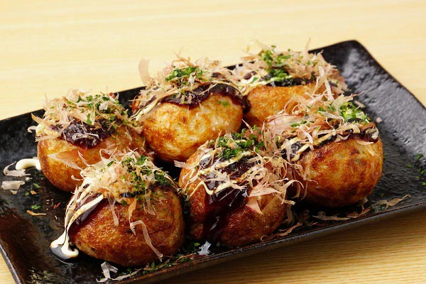

แนะนำอาหารญี่ปุ่น
สำรับญี่ปุ่นมาตรฐานส่วนมาก จะใช้เทคนิคการจัดที่เรียกว่า อิจิจูซันไซ (一汁三菜 ichijū-sansai) หรือซุปหนึ่งอย่างกับข้าวสามอย่าง กับข้าวนำมาจัดสำรับจะปรุงด้วยหลากหลายวิธี ทั้งแบบดิบ (ซาชิมิ) การย่าง การตุ๋นหรือการต้ม การนึ่ง การทอด การดอง หรือการยำ (สลัด) มุมมองของคนญี่ปุ่นต่ออาหารนั้นสะท้อนในการจัดบทในตำราอาหารโดยจะจัดแยกตามวิธีการปรุงอาหาร ไม่ได้จัดตามประเภทวัตถุดิบ หรืออาจจัดเป็นแยกเป็นประเภท ซุป ซูชิ ข้าว อาหารเส้น และของหวาน
ซูชิ (Sushi)

ซูชิเป็นอาหารญี่ปุ่นที่ทำจากข้าวหุงด้วยน้ำส้มสายชู, น้ำตาล และเกลือ และมักเสิร์ฟพร้อมกับปลา, ผัก, หรือวัตถุดิบอื่นๆ อาจเป็นรูปแบบต่างๆ เช่น นิกิริ, มากิ หรือซาชิมิ.
ราเมน (Ramen)
ราเมนเป็นบะหมี่ญี่ปุ่นที่มีซุปหลากหลายรสชาติ เช่น ซุปโชยุ (โชยุ), ซุปมิโสะ, หรือซุปชิโอ (เกลือ) พร้อมกับเนื้อสัตว์, ไข่, และผัก.
เทมปุระ (Tempura)

เทมปุระเป็นอาหารญี่ปุ่นที่ทำโดยการชุบแป้งแล้วทอดให้กรอบ โดยทั่วไปจะใช้วัตถุดิบเช่น กุ้ง, ผัก, และปลา.
ซาชิมิ (Sashimi)

ซาชิมิคือปลาดิบที่หั่นเป็นชิ้นบางๆ และเสิร์ฟพร้อมกับซอสถั่วเหลืองและวาซาบิ. ซาชิมิมักทำจากปลาอย่างเช่น ทูน่า, แซลมอน, หรือปลาอื่นๆ.
ทาโกะยากิ (Takoyaki)
ทาโกะยากิคือบอลขนมปังที่มีไส้กุ้งและปลาหมึก ปรุงรสด้วยซอสทาโกะยากิและปรุงด้วยขิงดอง, สาหร่าย, และปลาอบแห้ง.